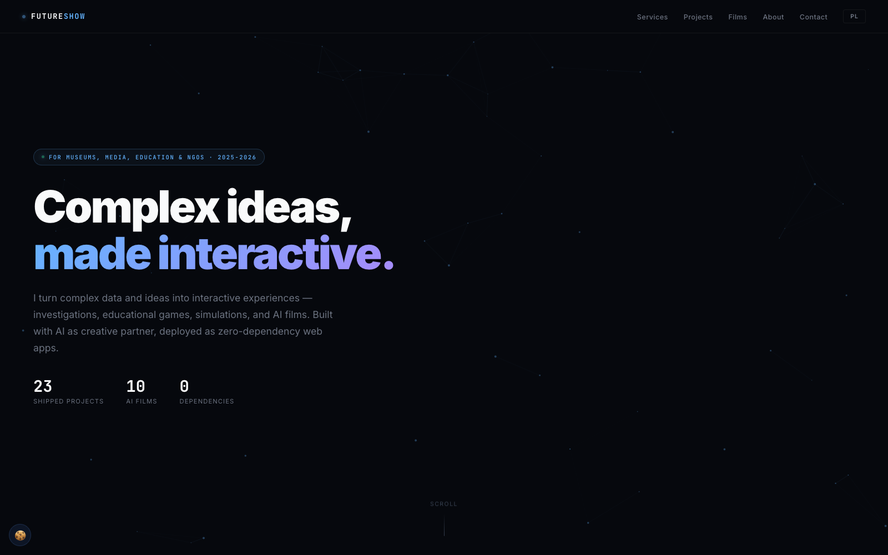

Complex ideas, made interactive.
Obecna wersja na futureshow1.github.io/futureshow. Ciemny tech-portfolio z particle background i cyjano-fioletowym gradientem.

Klasyczny model freelancerskiego portfolio. Hero, dziewięć projektów w gridzie, sekcje Services / About / Films / Contact. Wszystko działa, ale czyta się jako „młody dev z portfolio".
- Już działa, nic nie zmieniamy
- Bilingual EN / PL z toggle
- 9 projektów + films page
- Cookie consent + GA4 podłączone